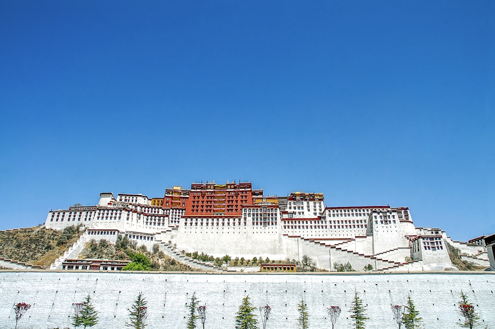
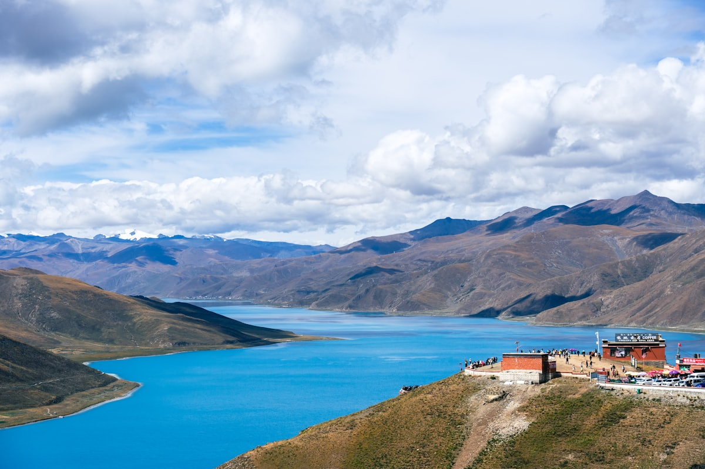
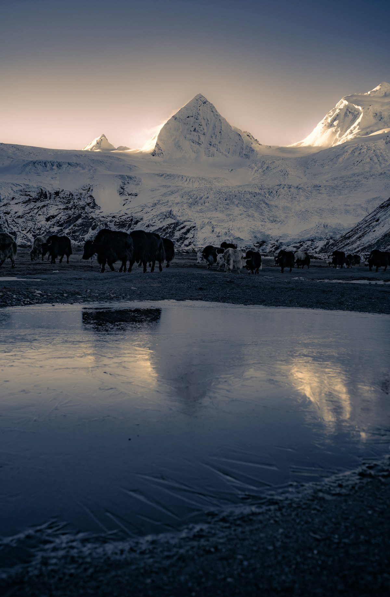
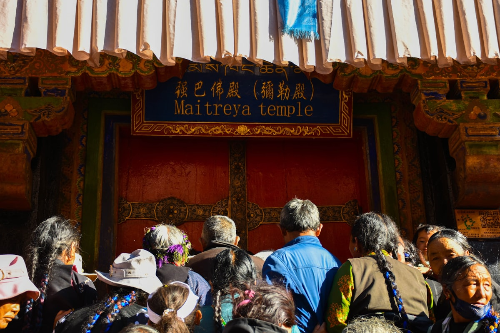
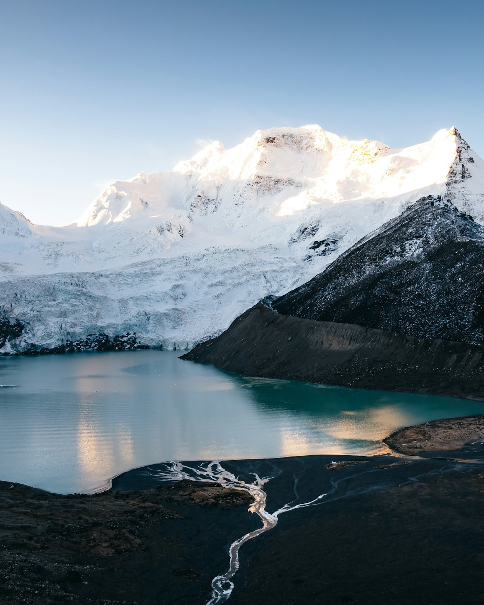
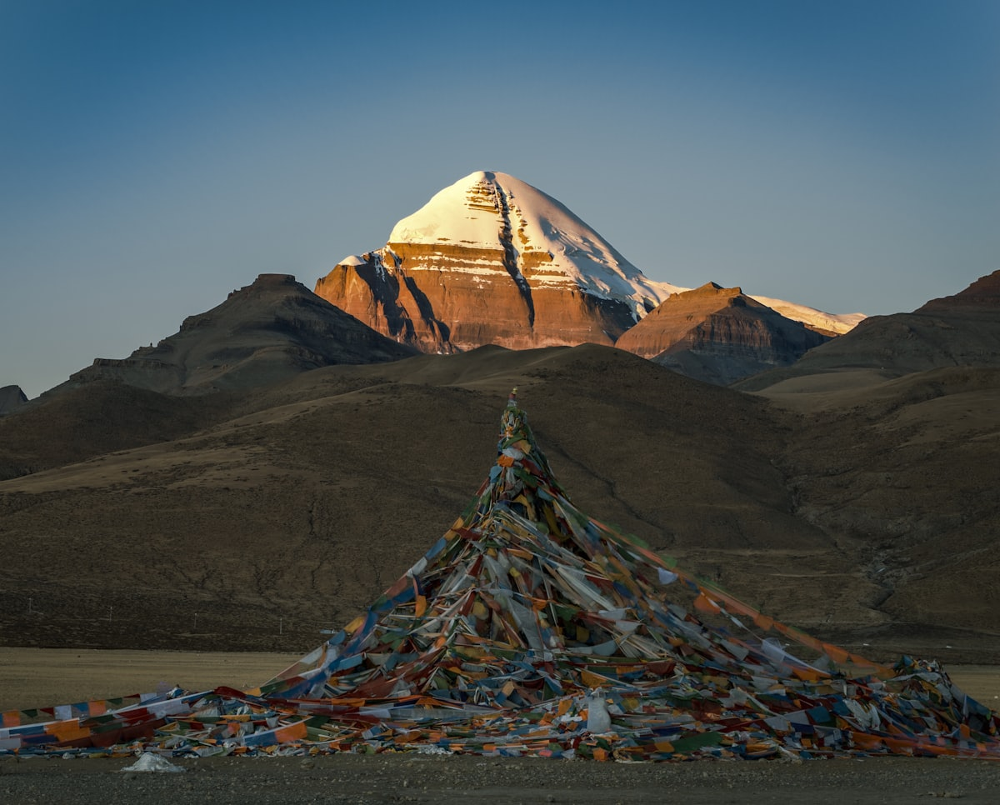
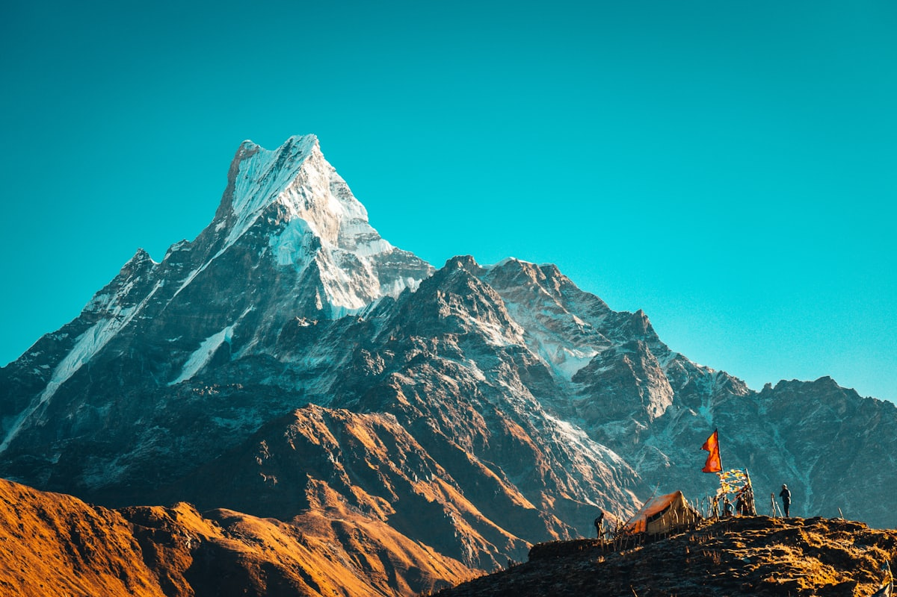
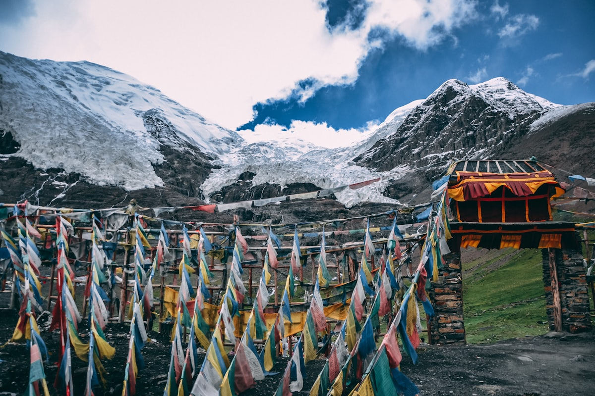

1核心结论
| 事项 | 结论 |
|---|---|
| 假期 | 国庆 10/1–10/7 ＋ 中秋 9/25–9/27 |
| 推荐方案 | 13 天版（9/24–10/6），只请 3 天假（9/28、29、30） |
| 回京硬约束 | 10/6（国庆内）下午到北京，10/7 北京休整，10/8 上班 |
| 行程链 | 北京 → 临汾 → 拉萨 → 塔钦 → 转山 → 临汾 → 北京 |
| 预算 | 经济 9000–11500 元 ／ 标准 13000–16500 元 ／ 舒适 17500–22000 元 |
| 三件提前事 | ① 边防证（临汾办，免费）② 拉萨＋塔钦住宿提前 1–3 个月订 ③ 四程交通尽早订 |
| 季节风险 | 十月初白天 5–12℃，夜间可至 -10℃，山口随时可能下雪 → 装备按秋冬高海拔标准 |
2推荐行程 · 13 天版（9/24–10/6）
请假：9/28（一）、9/29（二）、9/30（三），共 3 天
| 日期 | 星期 | 行程 | 海拔 | 假期 |
|---|---|---|---|---|
| 9/24 | 四 | 北京 → 临汾（晚班机 19:15–20:35，或高铁，下班后出发） | — | — |
| 9/25 | 五 | 临汾 → 西安/太原 → 拉萨（中转，傍晚到，直接休息） | 3650m | 中秋 |
| 9/26 | 六 | 拉萨适应：上午慢走八廓街，下午大昭寺 | 3650m | 中秋 |
| 9/27 | 日 | 拉萨适应：上午布宫（约 1.5h），下午休息 | 3650m | 中秋 |
| 9/28 | 一 | 拉萨 → 日喀则 → 萨嘎（包车，约 600km，7–8h） | 4600m | 请假 |
| 9/29 | 二 | 萨嘎 → 帕羊 → 塔钦（约 550km，6–7h） | 4675m | 请假 |
| 9/30 | 三 | 塔钦休整：买进山票、景区登记、检查装备 | 4675m | 请假 |
| 10/1 | 四 | 转山 D1：塔钦 → 止热寺（约 20–22km，7–8h） | 5100m | 国庆 |
| 10/2 | 五 | 转山 D2：止热寺 → 卓玛拉山口(5630m) → 祖楚寺（约 20km，10–11h，最苦） | 4830m | 国庆 |
| 10/3 | 六 | 转山 D3：祖楚寺 → 塔钦（约 10km，2–3h），午后包车连夜 → 萨嘎 | 4600m | 国庆 |
| 10/4 | 日 | 萨嘎 → 拉萨（约 600km，7–8h），下午到拉萨休整 | 3650m | 国庆 |
| 10/5 | 一 | 拉萨 → 西安 → 临汾（早班机＋高铁/航班，傍晚到老家） | — | 国庆 |
| 10/6 | 二 | 临汾 → 北京（高铁 4.5–5.5h，下午到）✅ | — | 国庆 |
3逐小时时间线（精确到小时）
以下为 13 天全程的逐小时执行时间线，可当作「当天打开照着走」的清单。标注 ※ 的可选项视体力与天气取舍。
| 时间 | 事项 |
|---|---|
| 17:00 | 下班后前往首都机场 T3/T2（国内航班提前 2h 到机场，安检＋登机） |
| 19:15 | 国航 CA8224 起飞（首选，不请假） |
| 20:35 | 抵达临汾尧都机场，打车/接机回家 |
| 21:30 | 到家，核对行李（边防证、证件、装备）；早睡，第二天 6:00 起 |
| 时间 | 事项 |
|---|---|
| 06:00 | 起床，早餐（清淡）；检查身份证、边防证、充电宝 |
| 07:00 | 出发去临汾西站（高铁）或尧都机场（航班） |
| 08:00–09:30 | 临汾 → 西安（高铁约 1.5h） |
| 10:00 | 西安咸阳机场值机、候机 |
| 11:30–14:00 | 西安 → 拉萨（直飞约 2.5–3h，选早班机） |
| 14:00–14:30 | 落地拉萨贡嘎机场（3650m），机场大巴/出租去市区 |
| 16:00 | 入住拉萨酒店，放下行李 |
| 16:30 | 微信小程序预约布宫（10/27）与大昭寺门票；采购红景天等药品（如没提前备） |
| 18:00 | 晚餐（清淡、易消化），不洗澡、不喝酒、不剧烈活动 |
| 21:00 | 入睡（首日高反最容易在夜间出现，务必保证睡眠） |
| 时间 | 事项 |
|---|---|
| 08:00 | 自然醒，早餐 |
| 09:00–11:00 | 慢走八廓街（顺时针转经，不赶路），适应海拔 |
| 11:00 | 大昭寺（85 元）入寺参观，11:30 后游客可入 |
| 12:30 | 午餐（甜茶馆/藏面，多喝热甜茶补糖分） |
| 14:00–16:00 | 回酒店午休（高反期下午补觉很重要） |
| 16:00–18:00 | ※ 布宫广场/药王山观景台（免费，20min），拍 50 元背面机位 |
| 18:30 | 晚餐 |
| 21:30 | 早睡；确认身体状态（能吃饭、睡眠 ≥6h、无明显头痛即合格） |
| 时间 | 事项 |
|---|---|
| 07:30 | 起床早餐（布宫需按预约时段提前 40min 排队） |
| 09:00–10:30 | 布达拉宫（200 元，一号线）参观，约 1.5h |
| 10:30–11:30 | 布宫广场/周边慢逛拍照 |
| 12:00 | 午餐 |
| 13:30–15:30 | ※ 西藏博物馆（免费，需预约）或回酒店午休 |
| 16:00 | 联系/确认 9/28 包车司机与出发时间；确认 10/3、10/4 返程车 |
| 18:00 | 晚餐；整理进阿里行李（轻装部分寄酒店） |
| 21:30 | 早睡，明早 6:30 出发 |
| 时间 | 事项 |
|---|---|
| 06:30 | 早餐，退房；包车出发（4 人拼车/独享） |
| 08:30–09:30 | 岗巴拉山口俯瞰羊卓雍措（羊湖）（100 元），停车 40–60min |
| 10:30 | 继续出发（海拔逐步爬升，全程每 2h 下车活动防血栓/缓解高反） |
| 11:30–12:00 | ※ 卡若拉冰川（约 50 元），20–30min 拍照 |
| 12:30–13:30 | 江孜午餐；※ 宗山古堡/白居寺（30–40min，时间紧二选一） |
| 15:00–16:30 | ※ 扎什伦布寺（55 元，1.5–2h），日喀则 |
| 16:30–19:30 | 日喀则 → 拉孜 → 萨嘎（约 300km，4h） |
| 19:30–20:00 | 到萨嘎（4600m），晚餐、入住；高反观察夜，别喝酒 |
| 时间 | 事项 |
|---|---|
| 07:00 | 早餐，出发 |
| 10:00 | ※ 帕羊镇停车休息 20min（草原牧场景观） |
| 12:00–13:00 | 途中午餐（阿里物价高，提前备些路餐） |
| 14:00 | 远眺冈仁波齐峰（南面初见神山） |
| 14:30–15:30 | 到达塔钦（4675m），入住弥散供氧旅馆 |
| 16:00 | 休息（此时海拔比拉萨高 1000m，务必平躺适应） |
| 18:00 | 晚餐；与客栈老板确认 10/1 转山天气与进山注意事项 |
| 21:00 | 早睡（海拔 4675m 初夜可能失眠——正常） |
| 时间 | 事项 |
|---|---|
| 07:30 | 早餐 |
| 08:30–11:30 | ※ 玛旁雍错（圣湖 150 元）＋拉昂错（鬼湖）包车往返 2–3h |
| 11:30–12:30 | 回塔钦午餐 |
| 14:00 | 买转山进山票（神山圣湖景区约 200 元）、景区登记 |
| 15:00 | 确认天气（问茶馆/客栈老板）；确认救援车联系方式与运营时间 |
| 15:30–16:30 | 试走 1–2km 平路，检验鞋子（防水、不磨脚）；适应背负 |
| 17:00 | 采购：水（1.5L+）、能量食品、葡萄糖、现金（1500–2000 分开放） |
| 18:30 | 晚餐（高碳水）；整理转山包（30–40L，两晚换洗衣物＋睡袋内胆） |
| 20:30 | 早睡养精蓄锐，明早 7:00 起（出发前一晚睡眠直接决定垭口状态） |
| 时间 | 事项 |
|---|---|
| 07:00 | 早餐（高碳水）；检查装备：登山杖、护膝、保温壶、头灯、便携制氧机（全程佩戴） |
| 08:00 | 出发（太阳出来后走，最迟 9:30；前 6km 平缓土路热身） |
| 09:30 | 经幡广场（约 5km，可雇马/背夫处） |
| 11:00 | 曲古寺（约 10km），休息 20min，茶馆补水 |
| 12:00 | 路餐（能量棒/巧克力，别吃太饱） |
| 14:00 | ※ 哲日普寺，短暂停留（北坡看神山，景观最壮丽） |
| 16:00 前 | 到止热寺（5100m）入住（床位 80–150 元，提前订） |
| 17:00 | 休息、热水、晚餐（茶馆） |
| 18:30 | ※ 北壁日照金山观景（17:30–19:00 前后，天气好时） |
| 20:00 | 入睡（5100m 失眠正常，别慌；备好明早 4:30 的头灯） |
| 时间 | 事项 |
|---|---|
| 04:30 | 起床、出发（头灯必带；山风午后加大，务必赶早） |
| 05:00–06:00 | 摸黑爬升段（天葬台方向）；便携制氧机保持开启 |
| 07:00 | 天微微亮，※ 天葬台遗址（尊重不打扰） |
| 09:00–10:00 | 翻越卓玛拉山口（5630m，全程最高点）——最后 1–2km 连续爬升，每走 20–30 步停下喘口气；经幡阵拍照 |
| 10:30 | 山口后缓行；※ 托吉措（慈悲湖，约 5200m）冰碛湖，稍作停留 |
| 11:30–13:00 | 漫长下坡＋平路（碎石多，护膝＋双杖）；路餐补充 |
| 13:30 | ※ 不动地钉：可坐救援车回塔钦（150–200 元/人），体力不支果断坐 |
| 15:00–16:30 | 继续前行，天黑前务必抵达补给点 |
| 17:30 前 | 到祖楚寺（4830m，D2 住宿），床位 80–150 元，晚餐、休息 |
| 20:00 | 早睡（明早 8:00 出发，11:00 前后回塔钦） |
| 时间 | 事项 |
|---|---|
| 08:00 | 出发（祖楚寺 → 塔钦平缓为主） |
| 09:00 | ※ 宗堆/经幡廊（出口段，玛尼墙与经幡） |
| 10:00 | ※ 不动地钉：体力不支可坐救援车（150–200 元/人）回塔钦 |
| 11:00 | 回到塔钦 ✅ 转山完成（约 52–56km） |
| 11:00–12:30 | 午餐＋短暂休息；归还/收拾装备 |
| 13:00 | 包车塔钦 → 萨嘎（550km），司机提前约好、熟悉路况、备氧气 |
| 17:00 | 途中休息点下车活动 15min |
| 20:00–21:00 | 到萨嘎（4600m），入住、晚餐、休息 |
| 时间 | 事项 |
|---|---|
| 06:00 | 早餐，出发（早走避开午后天气） |
| 09:00 | 途中休息下车活动 |
| 12:00 | 途中午餐 |
| 14:00–15:00 | 到拉萨，入住同一家/近的酒店 |
| 15:30 | 下午休整（洗澡可，别太久；低反提前注意：别立即开车） |
| 18:00 | 晚餐；确认明早航班时间与值机 |
| 21:30 | 早睡，明早 5:30 起赶飞机 |
| 时间 | 事项 |
|---|---|
| 05:30 | 起床，退房，前往机场（提前 2h） |
| 07:30–10:30 | 拉萨 → 西安（早班机约 3h） |
| 11:30–13:00 | 西安 → 临汾（高铁约 1.5–2h，或航班） |
| 13:30–14:00 | 到临汾，回家休息（若航班晚点则傍晚到） |
| 15:00 | 午睡/休整（低反期嗜睡正常，不要安排驾驶或高强度活动） |
| 18:30 | 晚餐，与家人团聚 |
| 22:00 | 早睡（明天高铁回北京） |
| 时间 | 事项 |
|---|---|
| 07:12 | 首选高铁 07:12 → 11:54（临汾西 → 北京丰台，上午到） |
| 10:38 | 备选班次 10:38 → 15:20（若没抢到早班） |
| 12:00 | 到北京丰台站，回家 ✅（满足 10/6 到京硬约束） |
| 13:00 | 午餐；下午北京休整（低反期嗜睡，别安排工作/驾驶） |
| 21:30 | 早睡，调整作息，10/7 继续休整、10/8 上班 |
4每日执行细节
9/24 北京 → 临汾（不请假）
- 首选飞机：国航 CA8224，首都机场 19:15 → 尧都机场 20:35（1 小时 40 分，每天 1 班，9 月底务必提前订）。
- 备选高铁：北京丰台 14:29 → 临汾西 19:02（G627，4.5h，需请半天假）；或更晚到临汾的班次。
- 当晚在家休息，行李提前寄到临汾或随身带走。
9/25 临汾 → 拉萨（中秋）
- 临汾无稳定直飞拉萨，走中转：临汾 → 西安（高铁约 1.5h）＋ 西安 → 拉萨（每日 10+ 班，2.5–3h），9/25 傍晚可到拉萨。部分日期有临汾直飞/经停拉萨的航班，出发前核实。
- 到达当天不洗澡、不喝酒、不剧烈活动、不熬夜。
- 布宫、大昭寺需提前 3–5 天实名预约（微信小程序），9/25 落地当晚就约。
- 备：红景天（提前 1 周开始吃）、高原安、布洛芬、葡萄糖口服液。
9/26–9/27 拉萨适应（2 天，够用但别浪费）
- 适应标准：能正常吃饭、睡眠 ≥6h、无明显头痛。两天基本够，若状态差，宁可在后面塔钦休整日多歇半天，也不要硬上。
- 9/26 慢走八廓街＋大昭寺；9/27 上午布宫（约 1.5h），下午回酒店休息。
9/28–9/29 进阿里（包车走阿里南线）
- 为什么包车：拉萨到塔钦 1200km 只有一条班车，11 点发车、20–24 小时连夜卧铺直达（650–750 元，只能买全程票）。高反风险大、返程无保证，不适合第一次转山。
- 南线：拉萨 → 日喀则(3650m) → 拉孜 → 萨嘎(4600m) → 帕羊 → 塔钦(4675m)，海拔逐步上升，本身就是最好的适应过程。
- 拼车价：越野车约 3–3.5 元/km，4 人拼车往返人均约 3000–4000 元；独享包车 8000–12000 元/往返。司机食宿是否含在报价，出发前谈清。
- 沿途每 2 小时下车活动，别睡太沉。
- 重点：9/28 与司机确认 10/3 的返程车（塔钦→萨嘎），10/4 萨嘎→拉萨 无缝衔接。
9/30 塔钦休整（住 1–2 晚适应，选弥散供氧旅馆）
- 适应优先：到塔钦后至少住 1–2 晚再出发转山，应对突发高反或恶劣天气。选有弥散供氧的房间（房间内置制氧机，塔钦已有），出发前一晚睡眠质量直接决定垭口状态。
- 上午（可选）：包车去 玛旁雍错（圣湖）＋拉昂错（鬼湖），塔钦往返约 2–3h，圣湖门票约 150 元。转山前静心一瞥圣湖很值得。
- 中午回塔钦吃饭；下午买转山进山票（神山圣湖景区约 200 元/人）、景区登记、确认天气（问茶馆/客栈老板）。
- 问清救援车：不动地钉之后的救援车联系方式、价格（150–200 元/人）与运营时间，这是你的退路。
- 试走 1–2km 平路，检验鞋子（防水、不磨脚）。
- 采购：水（1.5L+）、能量食品、葡萄糖。途中止热寺/祖楚寺有补给点，但贵、品类少。早睡养精蓄锐。
10/1–10/3 转山（52–56km，3 天）
D1 塔钦→止热寺（20–22km，7–8h）
- 7:30 早餐，太阳出来后出发，最迟 9:30。
- 前 6km 平缓土路热身；经曲古寺、哲日普寺。北坡看神山，景观最壮丽。
- 止热寺住宿：多人间床位为主（80–150 元/人），国庆要提前订。海拔 5100m 当晚可能失眠——正常，别慌。
- 部分路段可雇马（塔钦有马队，按段计价）。
D2 止热寺→卓玛拉山口(5630m)→祖楚寺（约 20km，10–11h）· 最艰苦
- 凌晨 4:30–5:00 出发（头灯），下午山口风大、随时变天。
- 便携制氧机全程佩戴、睡觉也戴，中途取下再戴需重新适应；垭口遇暴风雪时它是生命线。
- 最后 1–2km 连续爬升，每走 20–30 步停下喘口气，全程高反最危险段。
- 过山口后漫长下坡+平路，碎石多，护膝＋双杖。天黑前到祖楚寺。
- 状态差就在止热寺多住一晚，或雇马/背夫，不要硬扛（但会压缩 10/3 返程，提前做好心理准备）。
D3 祖楚寺→塔钦（约 10km，2–3h）＋ 当天返程赶路
- 祖楚寺 → 塔钦平缓为主，8:00 出发，11:00 前后回到塔钦；经过宗堆后到不动地钉，若体力不支可坐救援车回塔钦（150–200 元/人）。
- 午餐＋短暂休息后，约 13:00 包车塔钦 → 萨嘎（550km，约 20:00–21:00 到），住萨嘎。
- 这是全程最累的一天：转山收尾＋6–7 小时夜路。务必提前约好车、司机熟悉路况、带氧气。
10/4–10/6 返程（连续四天赶路，见核心结论的提醒）
- 10/4 早 6:00 萨嘎 → 拉萨（600km，7–8h），14:00–15:00 到拉萨，下午休整，住拉萨。
- 10/5 早班机拉萨 → 西安（约 3h），西安高铁/航班回临汾（1.5–2h），傍晚到老家。有拉萨直飞临汾班次优先用。
- 10/6 上午高铁临汾西 → 北京丰台（4.5–5.5h），下午到北京 ✅。选上午班次（如 07:12 → 11:54 或 10:38 → 15:20）。
- 这是国庆返程最高峰，10/5 拉萨→临汾、10/6 临汾→北京 的票务必提前抢。
5沿途景点规划

特点：世界海拔最高的宫堡式建筑群，红宫白宫层层叠叠依山而起；五世达赖灵塔殿镶金嵌宝，登顶可俯瞰整座拉萨城。

特点：供奉释迦牟尼 12 岁等身像——藏传佛教最神圣的圣物；寺前青石板常年被磕长头的信众磨得发亮，转八廓街感受最真实的朝圣日常。

特点：三大圣湖之一，湖水随光线呈现多层次蓝绿；岗巴拉山口 5030m 俯瞰，如碧玉弯月镶嵌群山之间。

特点：青藏高原离公路最近的冰川，冰舌几乎垂到国道旁；《红河谷》取景地，途中牦牛与雪山同框，是最经典的藏地画面。

特点：班禅驻锡地，强巴佛殿供奉世界最大铜佛（26m）；金顶与白色院墙在日喀则阳光下格外庄严。

特点：三大圣湖之首、世界海拔最高淡水湖之一；转山前静心一瞥，湖面如镜映衬神山雪峰。

特点：被藏传佛教、印度教、苯教共同尊为「世界中心」的神山，金字塔形雪峰终年不化；转山一圈，是无数信徒一生的心愿。
特点：D1 夜宿止热寺，清晨直面神山北壁，晨曦将雪峰染成金色——转山全程最震撼的画面之一，也是全程最壮丽的景观段。

特点：全程最高点 5630m，五彩经幡阵与玛尼堆在风中猎猎作响；是转山的精神高潮，也是体力与高反的极限考验。

特点：一路可见的五彩经幡与玛尼堆，承载着每一位朝圣者的祈愿；前 6km 平缓土路热身，经曲古寺、哲日普寺。
图片为 Unsplash 免费图库（Unsplash License），仅作景观参考；实际光影随季节与天气变化。
9/26–9/27 拉萨市区（适应期，以慢为主）
| 景点 | 看点 | 海拔 | 门票 | 建议停留 | 优先级 |
|---|---|---|---|---|---|
| 布达拉宫 | 红宫白宫、灵塔殿、五世达赖灵塔；登顶俯瞰拉萨全景 | 3700m | 一号线 200 元 二号线 100 元 | 3–4h | 必去 |
| 大昭寺 | 释迦牟尼 12 岁等身像、金顶平台远眺布宫；下午二楼有辩经 | 3650m | 85 元（旺季） | 1.5–2h | 必去 |
| 八廓街 | 转经道＋商业街，顺时针行走，看藏式生活与朝圣者 | 3650m | 免费 | 1–2h | 必去 |
| 药王山观景台 | 50 元人民币背面同款机位，拍布宫经典角度 | 3725m | 免费 | 20min | 顺路 |
| 宗角禄康公园 | 布宫背面湖心倒影，人少清静，日落时最美 | 3650m | 免费 | 30min | 顺路 |
| 罗布林卡 | 历代达赖夏宫园林，藏式园林典范 | 3650m | 60 元 | 1–2h | 可跳过 |
| 色拉寺 | 15:00–17:00 喇嘛辩经，场面生动（寺庙在城北，需往返） | 3680m | 50 元 | 1–2h | 可跳过 |
9/28–9/29 阿里南线去程（羊湖→江孜→日喀则→萨嘎→塔钦）
| 景点 | 看点 | 海拔 | 门票 | 建议停留 | 优先级 |
|---|---|---|---|---|---|
| 羊卓雍措（羊湖） | 三大圣湖之一，岗巴拉山口 5030m 俯瞰「碧玉湖」全景，1 号观景台最经典 | 4441m（湖面） | 100 元 | 40–60min | 必去 |
| 卡若拉冰川 | 电影《红河谷》取景地，冰舌近在咫尺；途经山口可见冰川全景 | 约 5400m | 约 50 元 | 20–30min | 顺路 |
| 江孜宗山古堡 | 抗英遗址《红河谷》原型，古城俯瞰江孜 | 4020m | 约 50 元 | 30–40min | 顺路 |
| 白居寺·十万佛塔 | 「塔寺结合」罕见形制，壁画精美 | 4020m | 约 60 元 | 30min | 顺路 |
| 扎什伦布寺 | 班禅驻锡地，强巴佛殿有世界最大铜佛（26m） | 3860m | 55 元 | 1.5–2h | 顺路 |
| 拉孜（藏刀之乡） | 进阿里前最后一个县城，可补给休整 | 4020m | — | 30min | 可跳过 |
9/30 塔钦周边（休整日，可轻量游玩）
| 景点 | 看点 | 海拔 | 门票 | 建议停留 | 优先级 |
|---|---|---|---|---|---|
| 冈仁波齐南面观景 | 转山前正面瞻仰神山；塔钦周边土坡即可远眺日照金山 | 4675m | 免费 | 30min | 必去 |
| 玛旁雍错（圣湖） | 三大圣湖之首、世界上海拔最高淡水湖之一；环湖公路/湖边静谧 | 4588m | 150 元 | 1–2h | 必去 |
| 拉昂错（鬼湖） | 与圣湖一丘之隔，湖水咸涩、湖色幽暗，阴阳对比强烈 | 4573m | 免费（需边防证） | 30min | 顺路 |
10/1–10/3 转山沿线（52–56km，一天一段）
| 路段 | 看点 | 海拔 | 备注 | 优先级 |
|---|---|---|---|---|
| D1 塔钦→止热寺 | 曲古寺、止热寺；北坡正面看神山，最壮丽一段 | 4675→5100m | 20–22km，7–8h | 必去 |
| 曲古寺（D1） | 转山途中第一座寺院，主供金刚持 | 约 4800m | 顺路进入 | 顺路 |
| 止热寺/芝热寺（D1 夜宿） | 直面神山北壁，晨曦日照金山绝佳机位 | 5100m | 多人间床位 80–150 元 | 必去 |
| 卓玛拉山口（D2） | 全程最高点 5630m，五彩经幡阵、玛尼堆，转山精神高潮 | 5630m | 凌晨 4:30–5:00 出发 | 必去 |
| 天葬台遗址（D2 山口前） | 藏传文化遗迹，衣冠冢与经幡 | 约 5600m | 路过尊重不打扰 | 顺路 |
| 祖楚寺（D2 夜宿） | 米拉日巴修行地，寺院宁静 | 4830m | 多人间床位 | 必去 |
| D3 祖楚寺→塔钦 | 出口段经幡廊、玛尼墙，回到塔钦完成转山 | 4830→4675m | 约 10km，2–3h | 必去 |
10/4–10/6 返程（赶路为主，无整块景点时间）
- 10/4 萨嘎→拉萨：全程赶路 600km，无景点时间；如天气好可车观沿途草原牧场景观。
- 10/5 拉萨→临汾：一早离拉萨，市区景点不再安排；如有 2h 富余可逛布宫广场（免费，不进馆）。
- 10/6 临汾→北京：纯交通日。
6路线全景地图
📍 图上标记的数字对应景点编号；右侧已直接列出每个节点的内容，点击地图圆点可在地图上定位查看。
转山环线放大图（10/1–10/3）
📍 转山约 52km 顺时针环线，主峰冈仁波齐（6638m）居中。右侧已直接列出每个节点内容，点击圆点可在地图上定位。
| 编号 | 点 | 海拔 | 日期·时段 | 里程 | 要点 |
|---|---|---|---|---|---|
| ① | 塔钦（起点/终点） | 4675m | 10/1 晨 · 10/3 午 | 0km | 转山大本营，进山票 200 元 |
| ② | 经幡广场 | 4740m | 10/1 上午 | 约 5km | 可雇马/背夫处，五彩经幡 |
| ③ | 曲古寺 | 4860m | 10/1 中午 | 约 10km | 转山第一座寺院，主供金刚持 |
| ④ | 止热寺（D1 住宿） | 5100m | 10/1 16:00 前到 | 约 20km | 北壁日照金山机位，床位 80–150 元 |
| ⑤ | 天葬台遗址 | 约 5370m | 10/2 清晨 | 约 4km | 藏传文化遗迹，尊重不打扰 |
| ⑥ | 卓玛拉山口 | 5630m | 10/2 9:00–10:00 | 约 8km | 全程最高点，经幡阵，每 20–30 步一歇 |
| ⑦ | 托吉措（慈悲湖） | 约 5200m | 10/2 上午 | 山口后 | 冰碛湖，转山途中著名的湖 |
| ⑧ | 祖楚寺（D2 住宿） | 4830m | 10/2 天黑前到 | 约 22km | 米拉日巴修行地，床位 80–150 元 |
| ⑨ | 宗堆/经幡廊 | 约 4750m | 10/3 上午 | 约 7km | 出口段，玛尼墙与经幡 |
7预算明细（三档）
| 项目 | 经济版 | 标准版 | 舒适版 | 说明 |
|---|---|---|---|---|
| 北京↔临汾往返 | 600–700 | 700–1000 | 1200–1600 | 高铁约 300–350/程；飞机约 500–800/程 |
| 大交通（临汾⇄拉萨） | 2800–3500 | 3200–4000 | 4000–5000 | 中转航班；9/25 出发、10/5 返回 |
| 拉萨↔塔钦交通 | 1300–1500 | 3000–4000 | 5000–8000 | 班车往返 / 4 人拼车 / 独享包车（含 10/3、10/4 返程） |
| 住宿（约 10 晚） | 1300 | 2000–2400 | 3200–4200 | 2 晚住临汾/北京家免费；转山 2 晚床位 80–150，拉萨/萨嘎标间 200–400 |
| 门票 | 350–500 | 350–500 | 350–500 | 转山 200；羊湖 100；玛旁雍错 150（布宫/扎寺等另行约 400+） |
| 餐饮（约 13 天） | 1100–1400 | 1300–1800 | 1800–2400 | 阿里地区物价偏高 |
| 装备 | 800–1200 | 2500–3500 | 4000+ | 从零购入冲锋衣/羽绒/鞋约 2500+ |
| 保险 | 200 | 300 | 500 | 必须含高原反应＋直升机救援条款 |
| 药品/氧气/杂项 | 300–500 | 400–700 | 600–900 | 便携制氧机闲鱼日租约 20 元×转山天数（推荐），小氧气瓶拉萨/塔钦买 |
| 合计 | 约 9000–11500 | 约 13000–16500 | 约 17500–22000 | — |
8备选路线
备选 A：7 天极限版（只放国庆，不请假）
备选 B：返程直飞北京（更轻松，但不经临汾）
若想避免 10/3 转山当天连夜赶路：10/3 住塔钦 → 10/4 塔钦→萨嘎 → 10/5 萨嘎→拉萨 → 10/6 拉萨直飞北京（下午到京，满足 10/6 硬约束）。代价：不经临汾，临汾老家改在 10/11（周日）回、10/12 返京（需再请 1 天假）。转山后有缓冲，身体舒服很多。
备选 C：转山提前（多请 1 天假，返程更从容）
若愿意 10/5、10/6 保持，但想把 10/3 的赶路拆开：转山改为 9/30–10/2（塔钦休整提前到 9/29 晚），10/3 塔钦→萨嘎（白天从容），10/4 萨嘎→拉萨，10/5 拉萨→临汾，10/6 临汾→北京。需多请 9/29 半天假＋9/30 已请，拉萨适应少一天，高反风险略升。
9倒排时间表
- 现在 – 8 月中① 订四程票：9/24 北京→临汾、9/25 临汾→拉萨、10/5 拉萨→临汾、10/6 临汾→北京；② 开始体能：每周 3 次有氧（慢跑/爬楼 40min+）
- 8 月底联系拉萨–塔钦包车/拼车资源；订拉萨住宿（3 晚）；预约 10/3 塔钦→萨嘎 与 10/4 萨嘎→拉萨 的返程车
- 9 月上旬订塔钦住宿（3 晚，含转山途中止热寺/祖楚寺 2 晚）、萨嘎过夜住宿；买高原徒步保险（含直升机救援）
- 9 月中旬办边防证（含「阿里地区普兰县」，临汾户籍地公安/政务大厅免费当天取）；买/租装备；开始吃红景天
- 出发前 1 周闲鱼租便携制氧机（日租约 20 元）、试戴确认电量续航；羽绒睡袋/冰爪等确认到位
- 9/20 前核对所有订单、证件复印件备 2 份、打印行程单、预约拉萨景点门票、确认临汾往返班次
- 9/22 前后抢 10/5 拉萨→临汾、10/6 临汾→北京 车票/机票（火车票提前 15 天开售，返程高峰手慢无；马年人流百万级，务必提前）
- 9/24–9/25北京→临汾→拉萨，出发 🎒
- 到塔钦后住 1–2 晚适应、选弥散供氧旅馆，问清救援车（不动地丁）联系方式与价格
10安全与高反应对（最重要）
- 红线原则：出现休息后不缓解的持续头痛＋呕吐/意识模糊/咳粉色痰（肺水肿信号） → 立即下撤，止热寺/祖楚寺有下山的路和车，别犹豫。
- 从拉萨到转山，每天海拔增量控制在 500m 以内（本行程已按此设计）。
- 5100m 止热寺夜间失眠是正常生理反应，第二天不要因此加码。
- 转山全程手机信号差、现金为王（准备 1500–2000 现金分开放）。
- 10 月天气突变随时可能发生，永远假设最坏情况：包里常备轻薄羽绒和雨衣，头灯电池双份。真实案例：5 分钟冰雹可积 5 厘米厚、同伴失温昏迷——垭口遇大风低温立即休整，绝不硬撑。
- 不要独自脱离队伍，尤其卓玛拉山口附近，有信号但地形复杂。
- 天黑不走路：冬季有狼患，天黑前抵达补给点，不要夜间翻垭口后段。
- 救援车是你的退路：不动地钉之后可坐当地车回塔钦（150–200 元/人），天黑/天气突变/高反加重时果断坐车，活着回家比完赛重要。
- 低反（醉氧）：下高原后 48 小时嗜睡乏力、不要开车或安排高强度工作。
- 返程连续四天赶路（10/3–10/6）是对身体的额外考验，尤其 10/3 转山当天连夜赶路：包车务必正规、司机熟悉路况、备氧气，途中每 2 小时下车活动。
11核心装备清单
证件
- 身份证
- 边防证
- 进山门票
- 保险单（手机＋打印 1 份）
衣物（秋冬高海拔，四层穿衣）
- 冲锋衣裤（防水防风）
- 羽绒服（700+ 蓬）＋备用保暖层一套
- 抓绒中层＋速干内衣×3
- 中帮防水登山鞋（新鞋提前穿开）
- 保暖裤/羽绒裤（播客强调：只穿羊毛打底裤会崩溃）
- 羊毛袜×3、保暖帽＋护脸（遮耳遮下半脸）
- 厚手套（防水保暖）、魔术头巾×2、墨镜（UV400）
- 一次性雨衣
户外
- 双登山杖（卓玛拉下坡全靠它）
- 头灯＋备用电池
- 30–40L 背包
- 保温壶 1L＋水瓶/水袋 ≥1.5L
- 冰爪（垭口有冰必带）
- 羽绒睡袋（-10℃ 温标）＋睡袋内胆（住宿极简陋）
- 路餐：能量棒、巧克力、牛肉干
- SPF50+ 防晒霜、润唇膏
医疗
- 便携制氧机（闲鱼日租约 20 元，全程佩戴）
- 红景天（提前 1 周）
- 高原安/诺迪康
- 布洛芬（高反头痛最有效）
- 葡萄糖口服液
- 晕车药、肠胃药、创可贴
- 护膝（下山关键）
其他
- 小氧气瓶（紧急用，返程夜路也用得上）
- 充电宝（转山路无充电）
- 现金、湿巾、洗漱用品
12关键资源（出行前逐一核实）
| 资源 | 信息 |
|---|---|
| 北京→临汾 | 飞机：国航 CA8224 首都 19:15 → 尧都 20:35，每天 1 班；高铁：北京丰台/北京北 → 临汾西，4.5–5.5h，多趟 |
| 临汾→拉萨航班 | 无稳定直飞，经西安/太原/成都中转（临汾→西安高铁约 1.5h 最顺） |
| 拉萨→临汾返程（10/5） | 早班机拉萨→西安（约 3h）＋ 西安→临汾高铁/航班（1.5–2h）；有拉萨直飞临汾班次优先用 |
| 临汾→北京（10/6） | 高铁临汾西→北京丰台 4.5–5.5h（选上午班次）；或尧都→首都国航 1 天 1 班。返程高峰，提前抢票 |
| 拉萨→塔钦班车 | 拉萨北郊客运站（扎基路 11 号），11:00 发车，约 20–24h，650–750 元，只能买全程票 |
| 拉萨→塔钦包车 | 阿里南线约 1200km，2 天；4 人拼车人均往返 3000–4000 元 |
| 拉萨↔阿里昆莎机场航班 | 班次少、易取消，仅作返程备选 |
| 神山圣湖景区门票 | 约 200 元/人（塔钦购票） |
| 布宫/大昭寺预约 | 微信小程序实名预约，提前 3–5 天 |
| 边防证 | 临汾户籍地公安/政务大厅，免费当天取 |
13实战经验补充（两期播客学习）
13.1 马年人流预警：价格翻 3 倍、务必提前订房
13.2 便携制氧机：最被低估的「性价比之王」
| 方案 | 优势 | 劣势 | 适合 |
|---|---|---|---|
| 便携制氧机（推荐） | 连续供氧不断、闲鱼日租约 20 元、可边走路边吸 | 需充电、有重量、中途取下需重新适应 | 预算有限但需多日吸氧 |
| 医用氧气袋 | 容量大 | 一次性、不能重复充气、携带不便 | 短途/固定营地 |
| 碳纤维氧气瓶 | 超轻便携 | 贵、需提前购买 | 轻度高反备用 |
| 普通氧气罐 | 最便宜 | 几分钟吸完、等于没带 | 不推荐用于徒步 |
13.3 救援车机制：认怂不是耻辱，是智慧
- 过了卓玛拉垭口后的不动地钉（平缓地带）是救援车起点，150–200 元/人直接坐车回塔钦（当地皮卡/面包车，非救护车）。
- 该坐车的情况：天色已暗、天气突变（暴风雪/大雨）、脚起泡走不动、高反持续加重、制氧设备电量耗尽。
- 松鹤到不动地钉选择坐车，同伴选择走完——「这不是比赛，没有人给你发奖牌」。安全第一、体验第二、完赛最不重要。
- 塔钦时提前问清救援车联系方式与运营时间。
13.4 天气突变是真实杀人事件
13.5 转山节奏：两天/三天/一天怎么选
| 维度 | 两天（推荐） | 三天（最佳体验） | 一天（不推荐） |
|---|---|---|---|
| 节奏 | 先甜后苦，夜宿止热寺 | 充分感受风景人文 | 匆匆赶路 |
| 体力 | 中等可恢复 | 最从容 | 17–19 小时，极高 |
| 风险 | 较低 | 最低 | 夜间遇狼、失温、高反加重 |
| 一句话 | 大多数人体能最优解 | 时间充裕者首选 | 仅适合拉练目的 |
13.6 夜间狼患与天黑原则
- 冬季小动物少、狼饿，甚至跑到镇上。毛冬去年凌晨 3–4 点两次见狼。
- 藏族人天黑不走路、找地方住。游客也应天黑前抵达补给点，不要夜间翻垭口后段（宗堆附近几公里是最容易遇狼熊的路段）。
13.7 装备查漏补缺（播客重点补充）
| 装备 | 播客强调 |
|---|---|
| 保暖帽＋护脸 | 必须防风防寒、能遮住耳朵和下半脸；毛冬护脸太薄「头被吹傻」 |
| 厚手套 | 防水保暖；毛冬完全没带，低温大风下崩溃 |
| 保暖裤＋羽绒 | 只穿一条羊毛打底裤是踩坑；备用保暖层至少一套 |
| 冰爪 | 垭口有冰必带，无攀登基础强烈建议 |
| 羽绒睡袋（-10℃ 温标）＋睡袋内胆 | 住宿极简陋（大通铺/茶馆长椅），止热寺有相对好一点的标间 |
| 保温壶 | 5600 米喝一口热水是「救命级别」的体验 |
| 头灯＋备用电池 | 两天路线可选，一日走完/天气延误必须 |
13.8 低反（醉氧）：下高原后的隐藏风险
13.9 与藏族同胞相处：多一分理解
- 补给点老板很多不懂普通话，不是不招呼你，是语言障碍；学几句简单藏语问候（「扎西德勒」）很有用。
- 带现金：部分补给点无移动支付。
- 住大通铺别挑剔卫生；茶馆气氛很好。